4.9.1. 文章（テキストフレーム）を出力する
長文のテキストを出力する場合は、文章の折り返しや、段落設定などが行える「テキストフレーム」を利用します。
テキストフレームでは、文章内で他フィールドを参照することができるので、動的なテキストが作成できます。
制限
テキストフレームは、日本語様式および英語様式のみで利用可能です。
テキストフレームで繰り返しアイテムを作成できません。
フィールドを参照して動的なテキストを作成する場合に、参照するフィールドデータに以下の記号が含まれていると、テキストフレームの印字処理が正常に完了せず、印刷を中断してしまうため帳票は出力されません。
そのため、以下の記号を使用する場合は指定子（実体参照）に変更する必要があります。指定子（実体参照）に変更しない場合はサポート対象外となります。
記号
指定子（実体参照）
<
<
>
>
"
"
'
'
&
&
（半角スペース文字）
テキストフレームを配置する
テキストフレームの配置は、次の手順で行います。
ツールボックスのをクリックし、フォームエディター上の任意の位置にマウスカーソルを移動します。
マウスカーソルが
 に変わります。
に変わります。フォーム上の任意の位置をポイントしたまま、矩形を描くようにドラッグし、フレームサイズを指定することで、テキストフレームが配置され、［文字列編集］ダイアログが表示されます。
［文字列編集］ダイアログの画面上部のテキストボックスに、文字列を入力します。
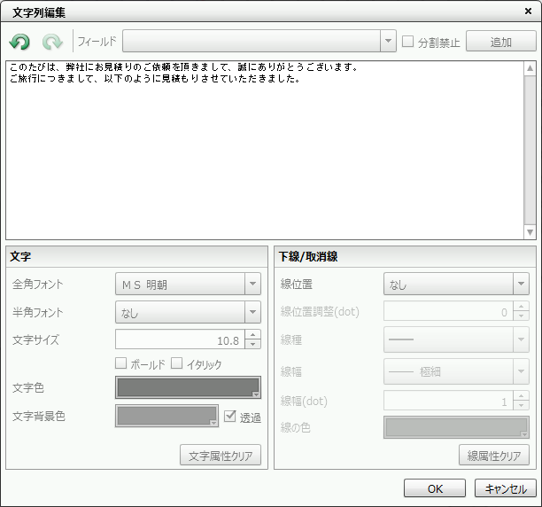
各種設定を行います。詳細は、本項の「フィールドを参照した動的なテキストを入力する」、「入力したテキストの装飾設定を行う」を参照してください。
設定終了後、［OK］ボタンをクリックします。
［文字列編集］ダイアログが閉じ、フォーム上のテキストフレームに、入力した文字列が表示されます。
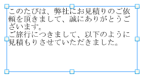
制限
テキストフレームの領域を超える部分の文字列は出力されません。
同一テキストフレーム内で文字列をコピーする場合は、文字装飾設定もコピー先へ継承されます。
テキストフレームの文字列は、UnicodeのIVS（異体字）に対応していません。
テキストフレームのプロパティを設定する
テキストフレームのプロパティ設定を行います。プロパティは［基本設定］、［線］、［書式］、［余白］、［インデント設定］、［行送り設定］、［行揃え設定］、［組版処理設定］、［綴り設定］に分類され、タブごとにまとめられています。
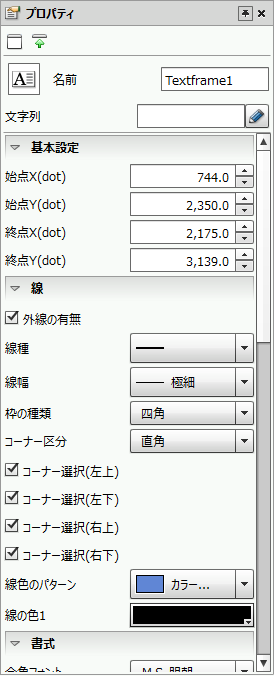
共通設定
項目 | 説明 |
|---|---|
名前 | テキストフレーム名を入力します。指定していない場合は、アイテム名（TextFrame）に加えて、作成した通し番号が付加された名称が自動的に指定されます。英数、カナ、漢字と下線記号（_）が使えます。名前の先頭文字に数字は使用できません。入力できる名前の長さは管理者による設定により異なります（初期値は30バイトです）。 |
文字列 | フレーム内に表示する文字列を入力します。設定欄右端のをクリックして表示される［文字列編集］ダイアログで設定をします。［文字列編集］ダイアログでは、文字列に対して文字装飾を設定することや、段落の書式体裁を設定できます。操作については、本項の「テキストフレームを配置する」、「フィールドを参照した動的なテキストを入力する」、および「入力したテキストの装飾設定を行う」を参照してください。 |
基本設定
項目 | 説明 |
|---|---|
始点X(dot) | テキストフレームの左上隅のX座標を指定します。
|
始点Y(dot) | テキストフレームの左上隅のY座標を指定します。
|
終点X(dot) | テキストフレームの右下隅のX座標を指定します。
|
終点Y(dot) | テキストフレームの右下隅のY座標を指定します。
|

線
項目 | 説明 |
|---|---|
外線の有無 | テキストフレームの枠線の有無を指定します。 オンにすると、枠線を表示します。 |
線種 | 罫線の種類を選択します。 制限
|
線幅 | 線幅を選択します。 ［自由(dot)］を選択した場合は、次の［線幅(dot)］で線幅を自由に設定します。 |
線幅(dot) | ［線幅］で［自由(dot)］を選択した場合は、線幅をドット単位で設定します。 制限画面の表示が「400%」以外の場合は、線幅が正確に表現されないことがあります。 |
枠の種類 | 枠の種類を［四角］、または［四辺］から選択します。［四角］の場合は枠線すべてについて統一の設定となります。［四辺］の場合は上下左右の各罫線について、個別に表示/非表示の設定、［線幅］・［線種］の設定が行えます。 |
コーナー区分 | 矩形の角の形を指定します。
|
コーナー選択(左上) コーナー選択(左下) コーナー選択(右上) コーナー選択(右下) | 形を変える角の位置を選択します。 オンの場合は、［コーナー区分］で選択した形状に表示されます。オフの場合は、直角となります。 |
コーナーの半径(dot) | ［コーナー区分］で［カット］、［丸］、［逆丸］を選択したときに、コーナーの半径を指定します。 |
線色のパターン | 枠線の塗りのパターンを指定します。 |
タイルパターン | ［線色のパターン］で［パターン網掛け］を選択した場合に、タイルのパターンを指定します。 |
タイル線の幅(dot) | ［線色のパターン］で［パターン網掛け］を選択した場合に、タイル線の幅を指定します。 |
タイル線の間隔(dot) | ［線色のパターン］で［パターン網掛け］を選択した場合に、タイル線の間隔を指定します。 |
グラデーション方向 | ［線色のパターン］で［グラデーション2］を選択した場合に、グラデーション開始点から終了点の方向を指定します。 終了色、および区分の設定によってグラデーションが変化します。 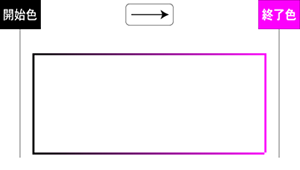 |
線の色1 | テキストフレームの枠線の色を選択します。 |
線の色2 | ［線色のパターン］で［パターン網掛け］を選択した場合に、タイル線の色を指定します。 ［線色のパターン］で［グラデーション2］を選択した場合は、グラデーションの終了色を指定します。 |
書式
項目 | 説明 |
|---|---|
全角フォント | 全角文字を印字する際に使用するフォントを選択します。 この設定が［文字列編集］ダイアログの［全角フォント］の初期値になります。 |
半角フォント | 半角文字を印字する際に使用するフォントを選択します。 この設定が［文字列編集］ダイアログの［半角フォント］の初期値になります。 選択できるフォントについては、「アイテムの概要」の「参考」を参照してください。 参考［なし］を選択した場合は、［全角フォント］として指定されたフォントが半角文字にも使われます。 |
文字サイズ | 印字する文字サイズをポイントで設定します。1～96ポイントの範囲内で指定できます。 この設定が［文字列編集］ダイアログの［文字サイズ］の初期値になります。
|
ボールド | オンにすると、出力される文字が太字になります。 この設定が［文字列編集］ダイアログの［ボールド］の初期値になります。 |
イタリック | オンにすると、出力される文字が斜体になります。 この設定が［文字列編集］ダイアログの［イタリック］の初期値になります。 |
文字色 | テキストの色を指定します。 この設定が［文字列編集］ダイアログの［文字色］の初期値になります。 |
文字背景色 | テキストの背景色を指定します。この設定が［文字列編集］ダイアログの［文字背景色］の初期値になります。 ［文字背景色透過］がオンの場合は、選択できません。 |
文字背景色透過 | 他のアイテムが文字の下に重なるときに、テキストの背景色を透過するかどうかを指定します。 注意［文字背景色］で色を指定後に［文字背景色透過］をオンにすると、文字背景色が「パレットカラーの1番目の色」になります。 |
領域設定
項目 | 説明 |
|---|---|
広域調整 | テキストフレームに収まらない文字列が入力された場合に、すべての文字列が出力されるように、文字のサイズを自動的に縮小するかを指定します。 オンにすると、［最小文字サイズ］の指定値を文字サイズの下限として、［調整量］で指定した間隔で、枠内に文字が収まるように自動的に文字サイズを縮小します。 たとえば、［最小文字サイズ］を「10」、［調整量］を「0.1」とした場合、テキストフレーム内の文字サイズを現在のサイズから10ポイントまでの間で、0.1ポイント単位で自動縮小して枠内に収まるように調整します。 広域調整が無効の時の例（左）と広域調整が有効の時の例（右） 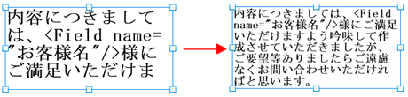 |
最小文字サイズ | 広域調整が有効時に、自動で縮小される文字の最小サイズをポイントで指定します。1～96ポイントの範囲内で指定でき、初期値は「1」です。［広域調整］がオンの場合に指定できます。 |
調整量 | 広域調整が有効時に、どのくらいの単位で文字を縮小するかをポイントで指定します。0.1～95ポイントの範囲内で指定でき、初期値は「0.5」です。［広域調整］がオンの場合に指定できます。 |
余白
余白とインデントの関係
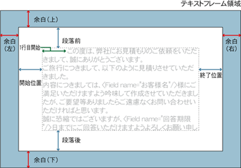
項目 | 説明 |
|---|---|
余白(上)(dot) 余白(下)(dot) 余白(左)(dot) 余白(右)(dot) | テキストフレームの上下左右の余白領域を0～10,000ドットの範囲内で指定します。
|
インデント設定
項目 | 説明 |
|---|---|
1行目開始(dot) | 1行目の文字列のインデントを指定します。
|
開始位置(dot) | 文字列の開始位置のインデントを指定します。
|
終了位置(dot) | 文字列の終了位置のインデントを指定します。
|
段落前(dot) | 段落前のインデントを指定します。
|
行送り設定
項目 | 説明 |
|---|---|
モード | ［行間余白(固定行送り)］、［比率(自動行送り)］、［最小(自動行送り)］、および［行間余白(自動行送り)］のいずれかを選択できます。 ［モード］での選択と［値(dot)］もしくは［比率］での数値の指定により、行間を設定できます。 |
値(dot) |
|
比率 |
|
行揃え設定
項目 | 説明 |
|---|---|
横 | 段落の左右の行揃えを選択します。 参考［両端揃え］は、両端に合わせて文字列を揃えます。最後の行、または1行のみの場合は左揃えです。 |
縦 | 行内で文字の大きさが異なる場合は、基準（水平）となる位置を選択します。 ベースラインとは、異なる大きさの文字列を揃える場合に、基準となる位置を示すものです。フォントの種類によって異なります。 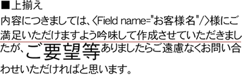 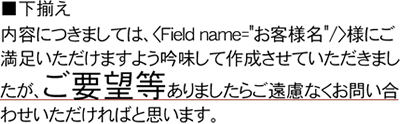 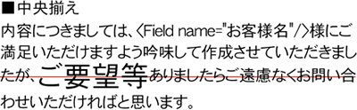 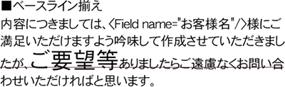 |
組版処理設定
項目 | 説明 |
|---|---|
空き量調整を有効にする | 文字（種類）の組み合わせによって、文字間に空きを挿入したり、文字間を詰めたりします。主に行末の文字が行のサイズにきれいにおさまらない場合の調整として使用します。 |
禁則処理を有効にする | 半角で入力された欧文単語や半角の数字、分割禁止を指定したフィールドのデータが途中で改行されないように調整します。日本語様式では、この調整のほかに、行末に配置してはいけない文字が行末に配置されないように（行末禁則）、および、行頭に配置してはいけない文字が行頭に配置されないように、改行や文字間隔を調整します。英語様式で、単語の途中で改行せずに次の行に送る処理を行う場合はオンにします。 なお、禁則処理をしない場合、フィールド参照に対する分割禁止の設定は無効になります。 |
折り返し行末空白除去を有効にする | 自動で行を折り返す場合に、その行末から次の行の先頭にかけて連続する空白を削除し、次の行の先頭は空白以外の文字から始まるようにします。 |
綴り設定
項目 | 説明 |
|---|---|
共通 | ［共通］ページにも配置するかどうかを指定します。 オンの場合は、［共通］ページに配置されます。他のすべての綴りページで共有されることになり、どのページからも編集が可能です。また、出力時にはすべての綴りページに印刷されます。 |
n印字ページ選択 （nは任意の数字） | ［共通］がオフの場合は、印字するページをオンにします。 |
フィールドを参照した動的なテキストを入力する
テキストフレームでは、文章内でフォーム上の他フィールドを参照することで、フィールド位置へテキストが埋め込まれることにより、動的な文章が作成できます。
注意
参照先となるフィールドは、事前に作成しておく必要があります。
ここでは例として、文章内でフィールド「お客様名」を参照するように設定します。
テキストフレームを選択し、プロパティエディターの［文字列］欄右端のをクリックします。
［文字列編集］ダイアログのテキストボックス内で、フィールド名を挿入する位置へマウスカーソルを移動します。
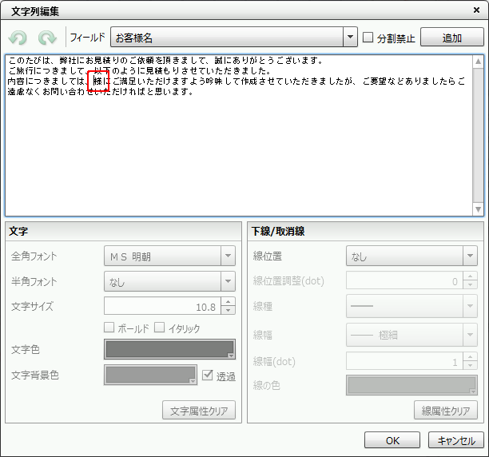
［フィールド］欄をクリックすると、テキストフレーム内で参照可能なフィールドの一覧がリストアップされます。参照するフィールド名をその中から選択します。
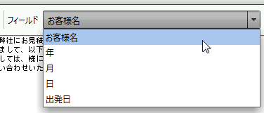
［追加］ボタンをクリックします。
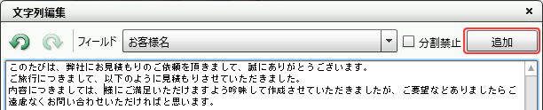
テキストボックスのマウスカーソル位置に、フィールドとの連携を表すタグ文字列が挿入されます。
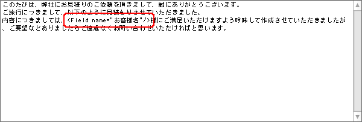
フィールドにセットされるデータが出力される際に複数行にまたがるのを防ぎたい場合は、挿入前に、［分割禁止］をオンにします。
［分割禁止］をオンにして、お客様名フィールドに「○○コンピュータ株式会社」を出力した場合は、出力された文字列は複数行にまたがらずに、出力されます。
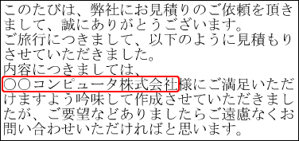
参考
［分割禁止］の設定を有効にするには、［禁則処理を有効にする］をオンにする必要があります。
［禁則処理を有効にする］の詳細は［組版処理設定］を参照してください。
［分割禁止］の設定は文字列を対象とするため、同じフィールドを複数設定した場合で、どれか1つでも［分割禁止］の設定がされている場合は、それらすべてのフィールドが［分割禁止］の対象となります。
また、異なる参照先フィールドでも同じ文字列が出力される場合は、［分割禁止］の対象となります。固定で入力した文章に対しても同様です。［分割禁止］の文字列の幅がテキストフレームの幅より長い場合は、［分割禁止］は無視され、その文字列は分割されます。
参照先フィールドの「名前」が変更された場合は、テキストフレーム内に埋め込まれた該当フィールド名も自動的に更新されます。
テキストフレームをコピーして別のXML様式ファイルに貼り付けるなど、参照先フィールドがそのXML様式ファイル上に存在しない場合でも、フィールド連携を表すタグ文字列を保持します。
制限
参照先となるフィールドが削除された場合は、テキストフレームに連携されたタグ文字列は削除されません。手動での削除が必要になります。
参照先フィールドにマスクの設定をすると、テキストフレーム内で参照できません。
データ参照はするが、参照するフィールドを印字しない場合は、「ページマスク」を利用します。詳細は「印字しない範囲（ページマスク）を設定する」を参照してください。
フィールドを参照する場合の制限事項
フィールドを参照した動的なテキストを入力する場合の制限事項は次のとおりです。
参照先フィールドのプロパティのうち、次の設定値は無視されます。
［X(dot)］、［Y(dot)］、［ピッチ(dot)］、［全角フォント］、［半角フォント］、［文字サイズ］、［縦倍率］、［横倍率］、［文字の方向］、［回転角度］、［ボールド］、［イタリック］、［アウトライン］、［アウトラインの線幅(dot)］、［マスク・イメージ］、［白文字］、［シャドウ］、［グラデーションを使用］、［グラデーション開始色］、［グラデーション終了色］、［グラデーション区分］
テキストフレームが属する階層により、参照できるフィールドの階層が異なります。参照できる階層には「○」を、参照できない階層には「×」を記しています。なお、テキストフレームをレコードまたは連写内に設計し、出力タイミングごとのデータを参照したい場合は、同一階層にフィールドを配置してください。
フィールドが属する階層
テキストフレームが属する階層
用紙直下
レコード
連写
用紙直下
○
×
×
サブフォーム
○
×
×
レコード
○
○
×
連写
○
×
○
入力したテキストの装飾設定を行う
テキストフレーム内の文字列の書式は、プロパティで設定されている値が初期値になります。
テキストフレーム内の一部の文字列に対してフォントやサイズ、文字色などの装飾を変更したい場合は、［文字列編集］ダイアログで設定します。
テキストフレームを選択し、プロパティエディターの［文字列］欄右端のをクリックします。
［文字列編集］ダイアログのテキストボックス内で、装飾を指定する文字列を選択します。
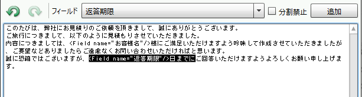
［文字］、［下線/取消線］を設定します。
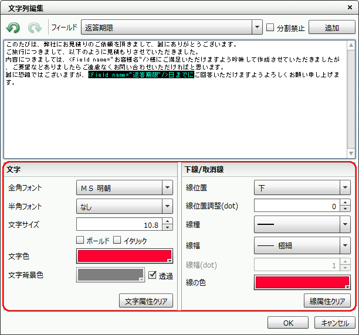
［OK］ボタンをクリックすると、［文字列編集］ダイアログを閉じ、設定した内容をフォーム上のテキストフレームに反映することができます。
［キャンセル］ ボタンをクリックすると、［文字列編集］ダイアログを閉じ、設定した内容を破棄します。
文字
項目 | 説明 |
|---|---|
全角フォント | 選択した文字列範囲の全角フォントを指定します。 |
半角フォント | 選択した文字列範囲の半角フォントを指定します。 指定できるフォントについては、「アイテムの概要」の「参考」を参照してください。 参考「なし」を指定した場合は、［全角フォント］として指定されたフォントが半角文字にも使われます。 |
文字サイズ | 選択した文字列範囲の文字サイズを1～96ポイントの範囲内で指定します。
|
ボールド | 選択した文字列範囲を太字にします。 |
イタリック | 選択した文字列範囲を斜体にします。 |
文字色 | 選択した文字列範囲の色を指定します。 |
文字背景色 | 選択した文字列範囲の背景色を指定します。［透過］がオフの場合に有効です。 |
透過 | 他のアイテムが文字の下に重なるときに、テキストの背景色を透過させるかどうかを指定します。 |
下線/取消線
項目 | 説明 |
|---|---|
線位置 | 選択した文字列範囲に引く下線/取消線の位置を指定します。 |
線位置調整(dot) | 線位置の微調整をdot単位で指定します。
|
線種 | 下線/取消線の種類を指定します。 |
線幅 | 下線/取消線の幅を指定します。 |
線幅(dot) | 線幅で［自由(dot)］を選択すると、dot単位で指定できます。
|
線の色 | 下線/取消線の色を指定します。 |
注意
［文字列編集］ダイアログ上の表示において、下線/取消線の設定の反映については、次の制限があります。
線位置
［上］、［中央］は中央に表示されます。
［ベースライン］、［下］は下位置に表示されます。
線種
「破線」などを選択した場合でも、すべて直線で表示されます。
線幅
選択した線幅に関係なく、すべて同じ太さで表示されます。
線の色
下線（取消線）の色は、下線が設定されている文字の色で表示されます。
参考
［文字背景色］で色を指定後に［文字背景色透過］をオンにすると、文字背景色が「パレットカラーの1番目の色」になります。
参照先フィールドが埋め込まれたタグ文字列の書式を変更した場合は、出力される文字列にその書式が反映されます。
テキストの装飾設定（文字）を初期値に戻す
文字列の任意範囲に指定されている装飾設定であるフォント、文字修飾、色を初期値に戻す場合は、次の手順で操作します。
テキストフレームを選択し、プロパティエディターの［文字列］欄右端のをクリックします。
［文字列編集］ダイアログのテキストボックス内で、初期値に戻したい文字列を選択します。
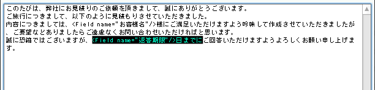
［文字］の［文字属性クリア］ボタンをクリックします。
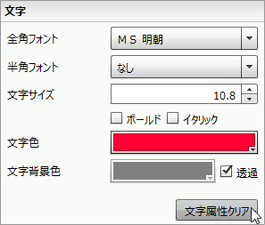
選択していた文字列の文字装飾設定が初期値に戻ります。
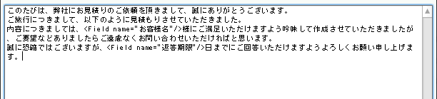
テキストの装飾設定（下線/取消線）を初期値に戻す
文字列の任意範囲に指定されている装飾設定である下線/取消線を初期値に戻す場合は、次の手順で操作します。
テキストフレームを選択し、プロパティエディターの［文字列］欄右端のをクリックします。
［文字列編集］ダイアログのテキストボックス内で、初期値に戻したい文字列を選択します。
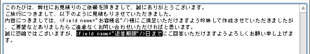
［下線/取消線］の［線属性クリア］ボタンをクリックします。
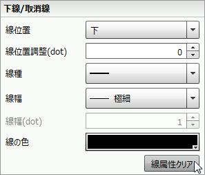
選択していた文字列の下線/取消線設定が初期値に戻ります。
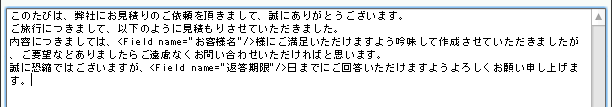